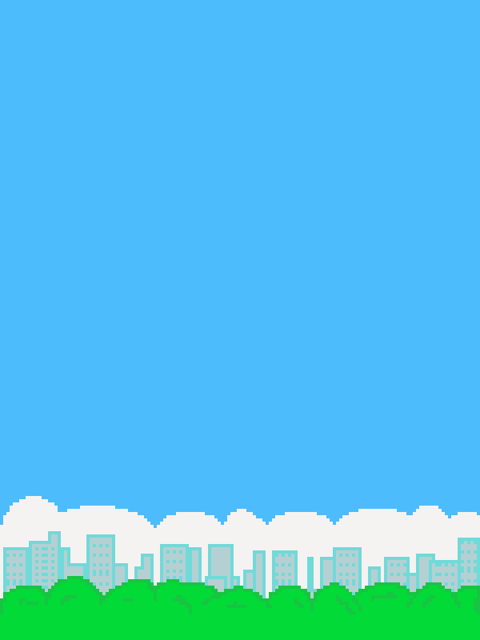

Flappy Bird AI
Watch a NEAT autoplayer learn Flappy Bird: mutate/crossover, evaluate, keep the best genome, and repeat.
Tech: JavaScript, p5.js, NEAT

Highlights
- Implemented Flappy physics, obstacle spawning, and collision checks in p5.js with responsive rendering.
- Built a NEAT implementation (genomes, species, mutation/crossover) so the bird learns without labels.
- Persists the best genome locally and seeds the next population to speed up future runs.
Impact & Metrics
- 100% offline-capable; training and replay run fully in-browser.
- Autoplayer typically reaches double-digit scores within a few generations on a laptop.
System Architecture
- Game loop + rendering handled by p5.js; physics and collision checks drive the fitness signal.
- Custom NEAT stack (genomes, species, crossover/mutation, innovation history) evolves the bird agent.
- LocalStorage caches the top-performing genome to replay and seed new generations.
Ownership & Learnings
Solo build: game physics, NEAT implementation, visualizer, and local persistence of best genomes.
This project pairs a classic Flappy Bird clone with a NEAT autoplayer. Each generation of birds gets fitness from how far they travel before crashing; genomes mutate and crossover, and the best genome is stored locally so reruns start from a strong baseline.
The loop is simple to follow: spawn a population, simulate flights, score by distance, breed the fittest, repeat. A lightweight brain visualizer shows the network structure so you can see why the agent flaps when it does.
Live Application
Loading interactive experience…